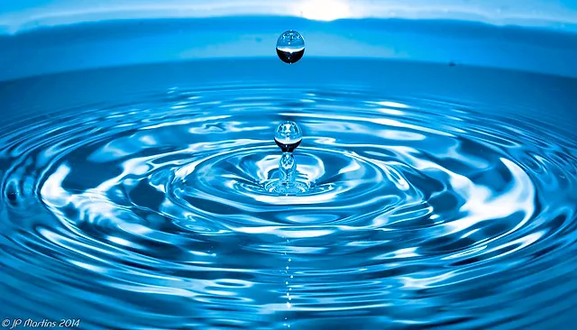
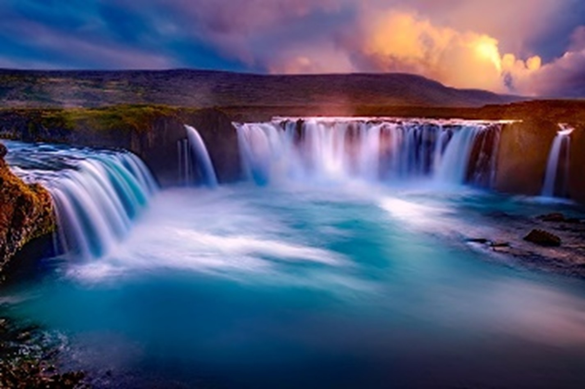
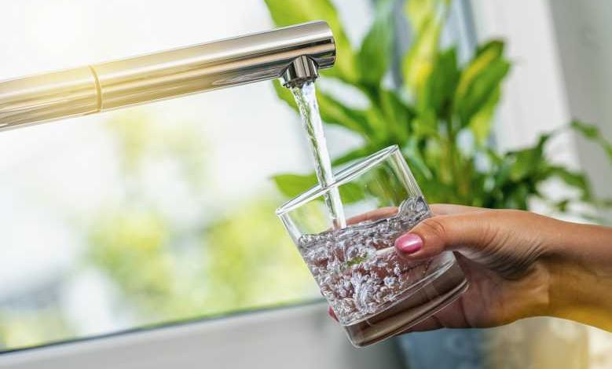
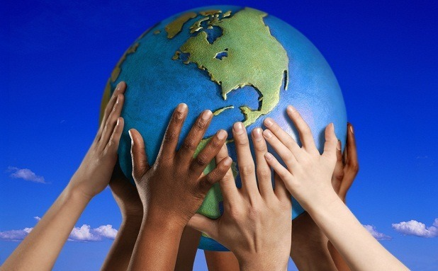

👋 Bienvenue au menu principal du projet.
Accédez au site par une tablette ou par un ordinateur pour une meilleure expérience.

1. Introduction
Le fait que l’eau est un aspect essentiel de nos vies, c’est certain. Mais est-ce vraiment si essentiel pour notre survie, ou est-ce seulement quelque chose qui occupe notre ordre du jour, et un sujet seulement inventé comme thème pour les magasins scientifiques hebdomadaires ?

2. Les sources d'eau
L’eau se trouve sous différentes formes dans la nature. Environ deux tiers de notre terre est couvert de l’eau : c’est quelque chose qu’on déjà savait depuis l’école primaire. Mais ce qui est important est l’eau qu’on peut utiliser dans notre vie.

3. La pollution de l'eau
La pollution de l’eau ne s’agit pas seulement de la pollution chimique. Les types de pollution de l’eau thermique u bactériologiques existent aussi. Il faut aussi noter que comme l’eau n’est pas seulement l’eau liquide des mers, sa pollution concerne donc un domaine beaucoup plus vaste.

4. La purification et la désinfection de l’eau
Il existe plusieurs méthodes de purifier l’eau. Certaines entre eux ne sont plus utilisés, ou ont des alternatives plus modernes ; mais la plupart des méthodes dont on va parler dans cette partie sont des méthodes largement utilisés dans plusieurs domaines industrielles ou domestiques.

5. Ce qu'on peut faire
Protéger notre source de vie : l’eau, et lutter contre sa pollution est une des plus importantes tâches de l’humanité entière, qui ne tolère aucune négligence. Mais en même temps, on sait tous qu’il est impossible de changer l’ordre mondial d'un claquement de doigt. Voici quelques propositions des actions qu’il faut mettre en œuvre dès que possible.
6. Bibliographie
Tous les sources (images et contenu scientifique) utilisées pour la partie écrite du projet. Toutes images sous le license Pixabay, ou sous le license Creative Commons (Public Domain). Tous contenu scientifique soumis au modification avant son ajout au projet.